Exploring ChatGPT 4o's New Image Generation from an Engineer's Perspective
As an electrical engineer, I don't usually spend time with fantasy storytelling or visual design — but I've always been curious about where AI is heading, both in creative and engineering domains.
Recently, I tested ChatGPT-4o's new image generation feature by reimagining scenes from the fantasy series: The Wheel of Time. The results were fantastic, which led me to further explore if this tool could be functional in the engineering field as well.
What I Explored¶
Fantastic: - Can the new tool not just draw, but visually narrate a moment with emotion, structure, and storytelling? - Can it finally generate text correctly within images (a known limitation in previous models)?
Functional? - Can this tool be useful in engineering, not just in art?
Fantastic — Scenes I Reimagined¶
"You are the Dragon Reborn" — Rand hears his destiny, rendered in dramatic manga style with an emotional panel layout.
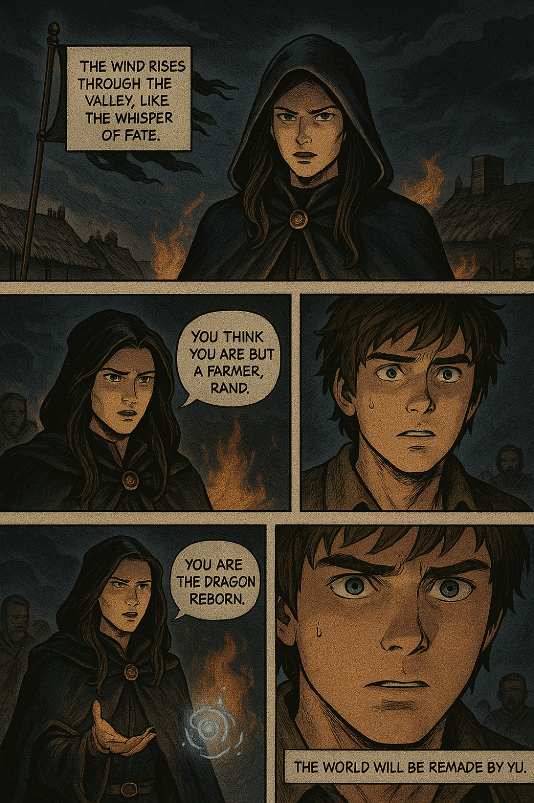
Mat's Corruption — A haunting, shadowy depiction of Mat falling under the dagger's influence.
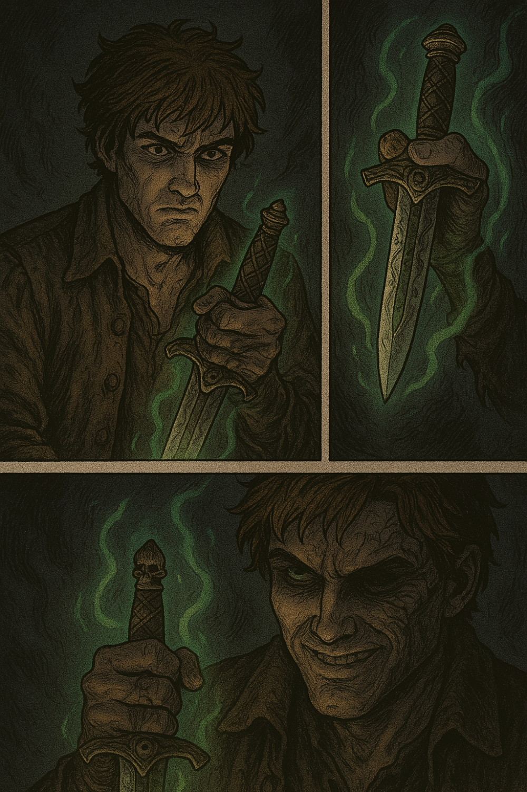
The White Tower — A traditional, calm, symbolic fantasy cover style.
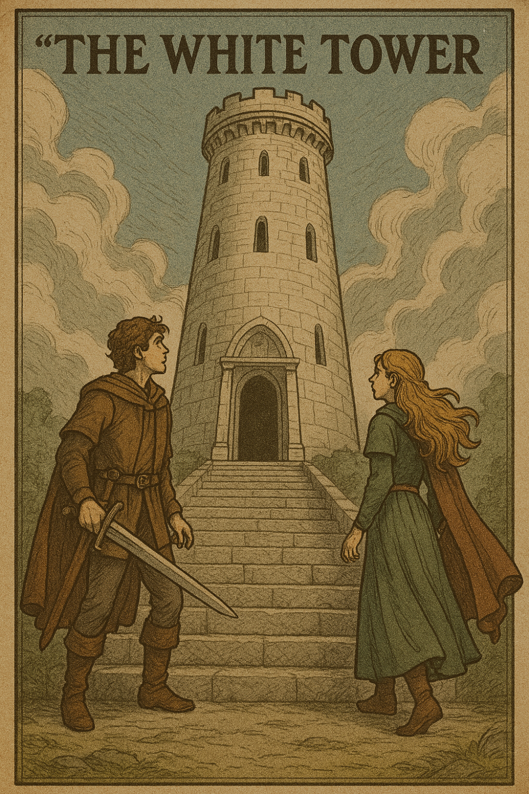
Rand Awakening at the Eye of the World — This one was my favourite. I tried three versions:
A single-scene fantasy poster:
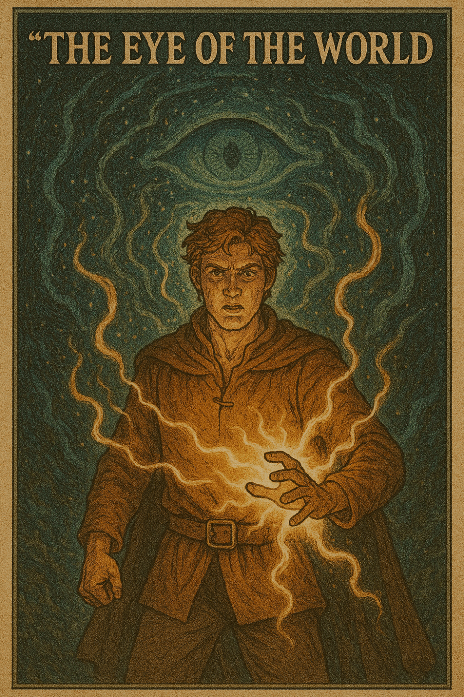
A 3-panel comic showing Rand's raw power:
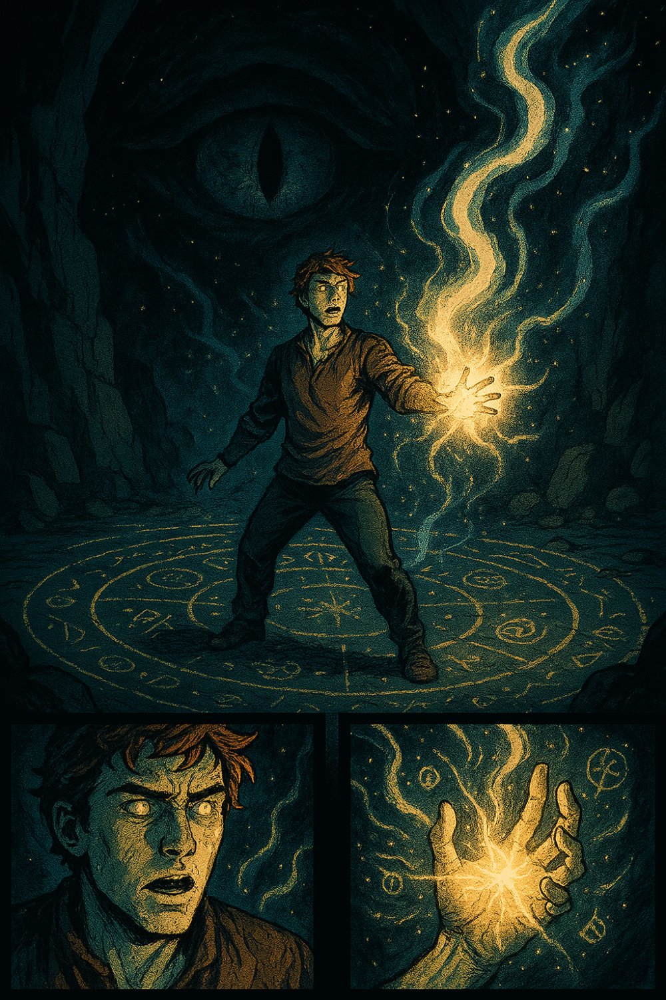
The same comic, now with magical sound effects and monologue added:
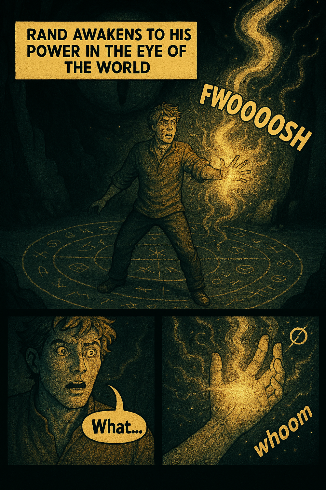
What I Learned¶
This tool is a major leap beyond previous DALL-E models. It maintains scene and character consistency, and you can adjust layout, proportions, and tone — almost like working with a designer. Plus, the generated text is no longer a random assortment of characters; it's meaningful and coherent.
If you've used image generators before, you'll know how big that is.
Functional? — Applications in Engineering¶
I wanted to see whether this tool could also be helpful in engineering communication — where we often need to simplify and visualise complex ideas.
Here are some promising use cases: - Technical illustrations - User-focused dashboards - Interactive learning content - Prototyping concepts
I asked it to generate images representing these points — and it did surprisingly well.
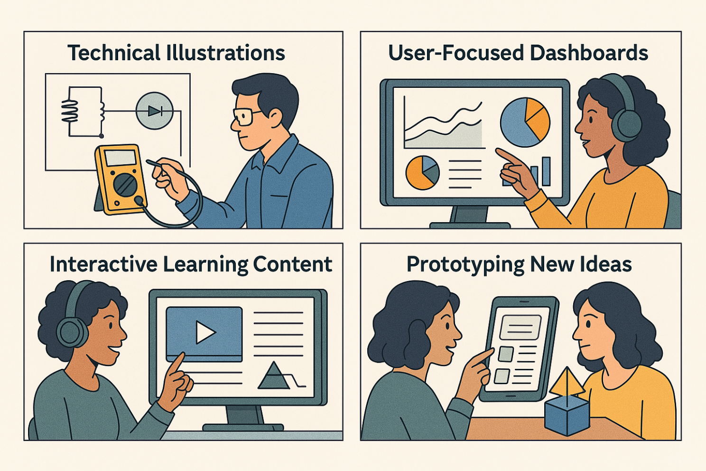
But There Are Limitations¶
When I tested it with basic theory illustrations — like Ohm's Law (U = IR) — it worked fine, even with realistic object symbols.
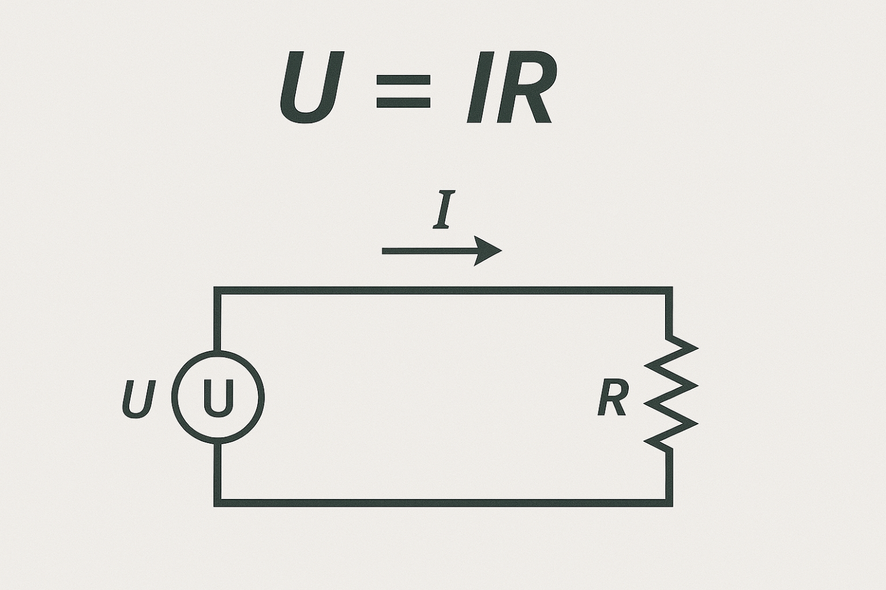
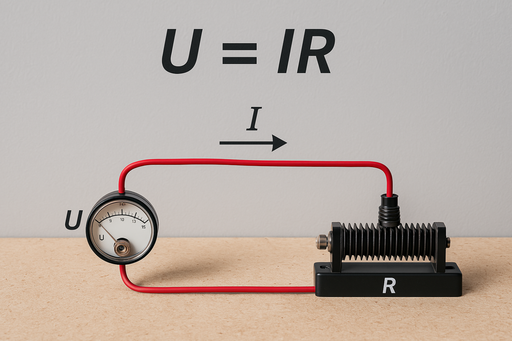
But when I asked it to generate something more complex, like the pi model of a high-voltage overhead line, the result was visually impressive but technically inaccurate.
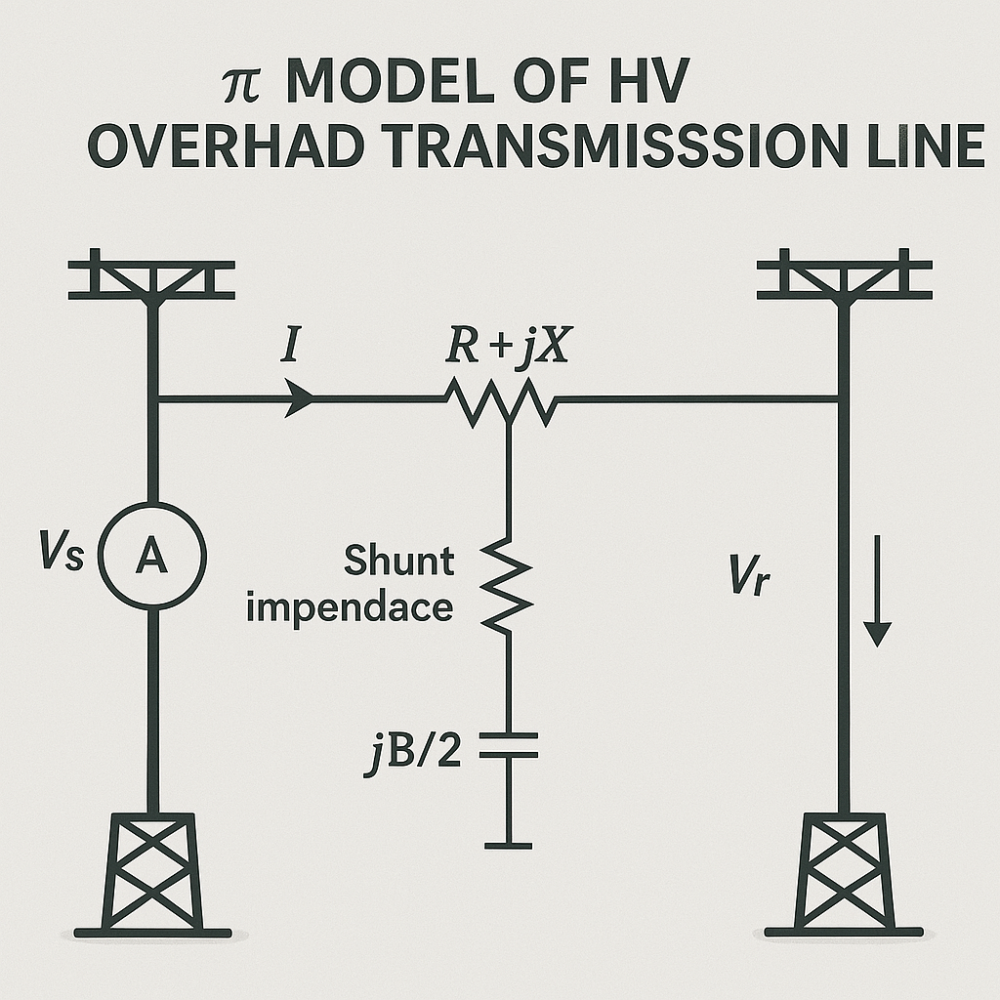
After I gave it detailed context and tried again, the result was closer — but still not 100% aligned with the theory.
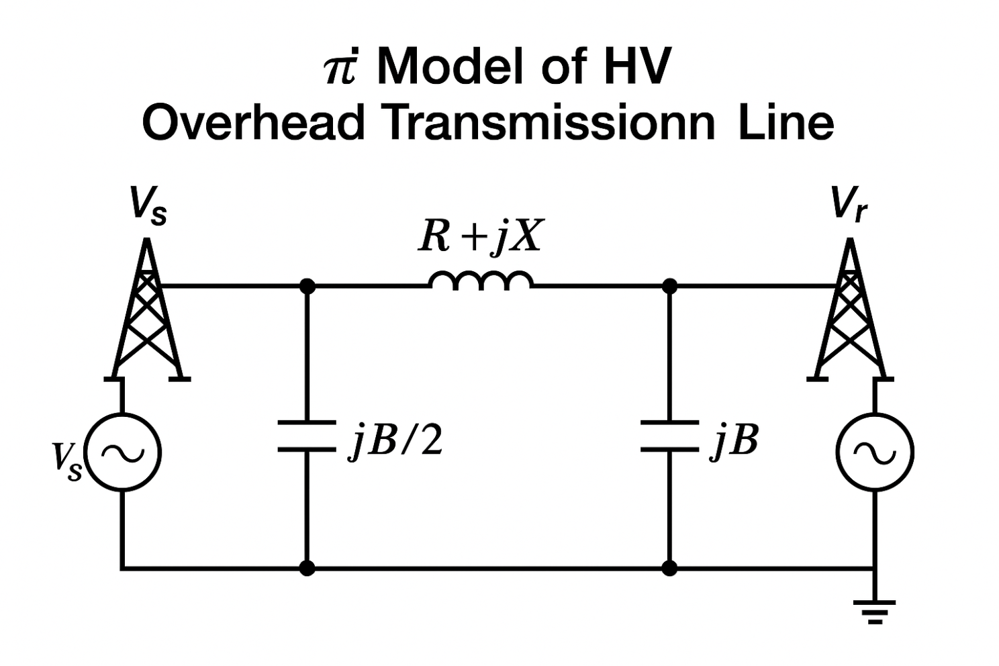
Final Thoughts¶
So far, ChatGPT-4o's image generation is great for visualising ideas, telling stories, and even experimenting with engineering concepts.
But for now, it's not yet reliable for precise technical illustrations without strong guidance.
Still, it's a powerful tool worth exploring — and maybe just a few versions away from being something truly transformative for engineers.
Listen to this post¶
AI-generated podcast discussion of this article